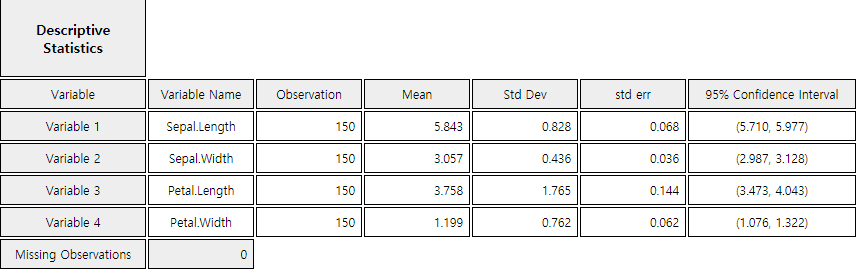

Chapter 12. Correlation and Regression Analysis
12.1 Correlation Analysis
[presentation] [video]
| Company | Advertise (X) | Sales (Y) |
|---|---|---|
| 1 | 4 | 39 |
| 2 | 6 | 42 |
| 3 | 6 | 45 |
| 4 | 8 | 47 |
| 5 | 8 | 50 |
| 6 | 9 | 50 |
| 7 | 9 | 52 |
| 8 | 10 | 55 |
| 9 | 12 | 57 |
| 10 | 12 | 60 |
Answer
Using 『eStat』 , enter data as shown in <Figure 12.1.1>. If you select the Sales as 'Y Var' and the Advertise 'by X Var' in the variable selection box that appears when you click the scatter plot icon on the main menu, the scatter plot will appear as shown in <Figure 12.1.2>. As we can expect, the scatter plot show that the more investments in advertising, the more sales increase, and not only that, the form of increase is linear.

<Figure 12.1.1> Data input in 『eStat』
|

In order to understand the meaning of covariance, consider a case that \(Y\) increases if \(X\) increases. If the value of \(X\) is larger than \(\overline X\) and the value of \(Y\) is larger than \(\overline Y\), then \((X - \overline X)(Y- \overline Y) \) always has a positive value. Also, if the value of \(X\) is smaller than \(\overline X\) and the value of \(Y\) is smaller than \(\overline Y\), then \((X - \overline X)(Y- \overline Y) \) has a positive value. Therefore, their mean value which is the covariance tends to be positive. Conversely, if the value of the covariance is negative, the value of the other variable decreases as the value of one variable increases. Hence, by calculating covariance, we can see the relation between two variables: positive correlation (i.e., increasing the value of one variable will increase the value of the other) or negative correlation (i.e., decreasing the value of the other).
Covariance itself is a good measure, but, since the covariance depends on the unit of \(X\) and \(Y\), it makes difficult to interpret the covariance according to the size of the value and inconvenient to compare with other data. Standardized covariance which divides the covariance by the standard deviation of \(X\) and \(Y\), \(\sigma_{X}\) and \(\sigma_{Y}\), to obtain a measurement unrelated to the type of variable or specific unit, is called the population correlation coefficient and denoted as \(\rho\).
$$ \text{Population Correlation Coefficient: } \rho = \frac{Cov (X, Y)} { \sigma_X \sigma_Y } $$
<Figure 12.1.3> shows different scatter plots and its values of the correlation coefficient.

The correlation coefficient \(\rho\) is interpreted as follows:
『eStatU』 provides a simulation of scatter plot shapes for different correlations as in <Figure 12.1.4>.
|
<Figure 12.1.4> Simulation of correlation coefficient at 『eStatU』
|
An estimate of the population correlation coefficient using samples of two variables is called the sample correlation coefficient and denoted as \(r\). The formula for the sample correlation coefficient \(r\) can be obtained by replacing each parameter with the estimates in the formula for the population correlation coefficient. $$ r = \frac {s_{XY}} { s_X s_Y } $$ where \(s_{XY}\) is the sample covariance and \(s_{X}\), \(s_{Y}\) are the sample standard deviations of \(X\) and \(Y\) as follows: $$ \begin{align} s_{XY} &= \frac{1}{n-1} \sum_{i=1}^{n} (X_i - \overline X )(Y_i - \overline Y ) \\ s_X &= \frac{1}{n-1} \sum_{i=1}^{n} (X_i - \overline X )^{2} \\ s_Y &= \frac{1}{n-1} \sum_{i=1}^{n} (Y_i - \overline Y )^{2} \\ \end{align} $$ Therefore, the formula \(r\) can be written as follows $$ \begin{align} r &= \frac {\sum_{i=1}^{n} (X_i - \overline X )(Y_i - \overline Y )} { \sqrt{\sum_{i=1}^{n} (X_i - \overline X )^{2} \sum_{i=1}^{n} (Y_i - \overline Y )^{2} } } \\ &= \frac {\sum_{i=1}^{n} X_i Y_i - n \overline X \overline Y } { \sqrt{\left (\sum_{i=1}^{n} X_{i}^{2} - n {\overline X}^2 \right) \left( \sum_{i=1}^{n} Y_{i}^{2} - n {\overline Y}^{2} \right) } } \end{align} $$
Answer
To calculate the sample covariance and correlation coefficient, it is convenient to make the following table. This table can also be used for calculations in regression analysis.
| Number | \(X\) | \(Y\) | \(X^2\) | \(Y^2\) | \(XY\) |
|---|---|---|---|---|---|
| 1 | 4 | 39 | 16 | 1521 | 156 |
| 2 | 6 | 42 | 36 | 1764 | 252 |
| 3 | 6 | 45 | 36 | 2025 | 270 |
| 4 | 8 | 47 | 64 | 2209 | 376 |
| 5 | 8 | 50 | 64 | 2500 | 400 |
| 6 | 9 | 50 | 81 | 2500 | 450 |
| 7 | 9 | 52 | 81 | 2704 | 468 |
| 8 | 10 | 55 | 100 | 3025 | 550 |
| 9 | 12 | 57 | 144 | 3249 | 684 |
| 10 | 12 | 60 | 144 | 3600 | 720 |
| Sum | 64 | 497 | 766 | 25097 | 4326 |
| Mean | 8.4 | 49.7 |
Terms which are necessary to calculate the covariance and correlation coefficient are as follows:
\(\small \quad SXX = \sum_{i=1}^{n} (X_i - \overline X )^{2} = \sum_{i=1}^{n} X_{i}^2 - n{\overline X}^{2} = 766 - 10×8.4^2 = 60.4 \)
\(\small \quad SYY = \sum_{i=1}^{n} (Y_i - \overline Y )^{2} = \sum_{i=1}^{n} Y_{i}^2 - n{\overline Y}^{2} = 25097 - 10×49.7^2 = 396.1 \)
\(\small \quad SXY = \sum_{i=1}^{n} (X_i - \overline X )(Y_i - \overline Y ) = \sum_{i=1}^{n} X_{i}Y_{i} - n{\overline X}{\overline Y} = 4326 - 10×8.4×49.7 = 151.2 \)
\(\small SXX, SYY, SXY \)represent the sum of squares of \(\small X\), the sum of squares of \(\small Y\), the sum of squares of \(\small XY\). Hence, the covariance and correlation coefficient are as follows:
\(\small \quad s_{XY} = \frac{1}{n-1} \sum_{i=1}^{n} (X_i - \overline X )(Y_i - \overline Y ) = \frac{151.2}{10-1} = 16.8 \) \(\small \quad r = \frac {\sum_{i=1}^{n} (X_i - \overline X )(Y_i - \overline Y )} { \sqrt{\sum_{i=1}^{n} (X_i - \overline X )^{2} \sum_{i=1}^{n} (Y_i - \overline Y )^{2} } } = \frac{151.2} { \sqrt{ 60.4 × 396.1 } } = 0.978 \)
This value of the correlation coefficient is consistent with the scatter plot which shows a strong positive correlation of the two variables.
Null Hypothesis: \(H_0 : \rho = 0\)
Test Statistic: \(\qquad t_0 = \sqrt{n-2} \frac{r}{\sqrt{1 - r^2 }}\), \( \quad t_0 \) follows \(t\) distribution with \(n-2\) degrees of freedom
Rejection Region of \(H_0\):
\( \qquad 1)\; H_1 : \rho < 0 , \;\;\) Reject if \(\; t_0 < -t_{n-2; α}\)
\( \qquad 2)\; H_1 : \rho > 0 , \;\;\) Reject if \(\; t_0 > t_{n-2; α}\)
\( \qquad 3)\; H_1 : \rho \ne 0 , \;\;\) Reject if \(\; |t_0 | > t_{n-2; α/2}\)
Answer
The value of the test statistic \(t\) is as follows:
\(\qquad \small t_0 = \sqrt{10-2} \frac{0.978}{\sqrt{1 - 0.978^2 }}\) = 13.26
Since it is greater than \(t_{8; 0.025}\) = 2.306, \(\small H_0 : \rho = 0\) should be rejected.
With the selected variables of 『eStat』 as <Figure 12.1.1>, click the regression icon on the main menu, then the scatter plot with a regression line will appear. Clicking the [Correlation and Regression] button below this graph will show the output as <Figure 12.1.5> in the Log Area with the result of the regression analysis. The values of this result are slightly different from the textbook, which is the error associated with the number of digits below the decimal point. The same conclusion is obtained that the p-value for the correlation test is 0.0001, less than the significance level of 0.05 and therefore, the null hypothesis is rejected.

|
Practice 12.1.1
A professor of statistics argues that a student’s final test score can be predicted from his/her midterm.
Ten students were randomly selected and their mid-term and final exam scores are as follows:
[Ex] ⇨ eBook ⇨ PR120101_MidtermFinal.csv.
1) Draw a scatter plot of this data with the mid-term score on X axis and final score on Y axis. What do you think is the relationship between mid-term and final scores?
2) Find the sample correlation coefficient and test the hypothesis that the population correlation coefficient is zero with the significance level of 0.05.
|
The variables are Sepal.Length, Sepal.Width, Petal.Length, and Petal.Width. Test the hypothesis whether the correlation coefficients are equal to zero.
Answer
From 『eStat』, load the data and click the 'Regression' icon. When the variable selection box appears, select the four variables of Sepal.Length, Sepal.Width, Petal.Length, and Petal.Width, then the scatter plot matrix will be shown as <Figure 12.1.6>.
It is observed that the Sepal.Length and the Petal.Length, and the Petal.Length and the Petal.Width are related.

<Figure 12.1.6> Scatter plot matrix using 『eStat』
|
When selecting [Regression Analysis] button from the options below the graph, the basic statistics and correlation coefficient matrix such as <Figure 12.1.7> appear in the Log Area with the test result. It can be seen that all correlations are significant except the correlation coefficient between the Sepal.Length and Sepal.Width.


|
Practice 12.1.2
A health scientist randomly selected 20 people to determine the effects of smoking and obesity on
their physical strength and examined the average daily smoking rate (, number/day),
the ratio of weight by height (, kg/m), and the time to exercise with a certain intensity (, in hours).
Draw a scatterplot matrix and test whether there is a correlation among smoking, obesity and
exercising time with a certain intensity.
[Ex] ⇨ eBook ⇨ PR120102_SmokingObesityExercis.csv.
|
Multiple Choice Exercise
*** Choose one answer and click [Submit] button
12.1 The variables X and Y have a strong relationship with a quadratic equation () as shown in the following table. What is their sample correlation coefficient?
| X | Y |
|---|---|
| ... | ... |
| -3 | 9 |
| -2 | 4 |
| -1 | 1 |
| 0 | 0 |
| 1 | 1 |
| 2 | 4 |
| 3 | 9 |
| ... | ... |
12.2 Which is a wrong description of the correlation coefficient?
12.3 Which is a right description of the correlation coefficient?
12.4 If the sample correlation coefficient between \(x\) and \(y\) is \(r\), what is the sample correlation coefficient between \(2x\) and \(3y +1\)?
12.5 Find the sample correlation coefficient between \(x\) and \(y\) of the following data.
| \(x\) | \(y\) |
|---|---|
| 10 | 2 |
| 20 | 4 |
| 30 | 6 |
| 40 | 8 |
12.6 If the correlation coefficient of two variables \(x, y\) is 0, what is the right description?
12.7 Which one of the following descriptions on the sample correlation coefficient \(r\) is not right?
12.8 Find the sample correlation coefficient between \(x\) and \(y\) of the following data.
| \(x\) | \(y\) |
|---|---|
| 1 | 5 |
| 2 | 4 |
| 3 | 3 |
| 4 | 2 |
| 5 | 1 |
12.9 If \(X\) and \(Y\) are independent, what is the sample correlation coefficient \(r\)?
12.10 Which one of the followings is not right for description of the sample correlation coefficient \(r\) between \(X\) and \(Y\)?
12.11 Which one of the followings has positive correlation?
12.12 Find the sample covariance between \(x\) and \(y\) of the following data.
| \(x\) | \(y\) |
|---|---|
| 1 | 5 |
| 2 | 5 |
| 3 | 5 |
| 4 | 5 |
12.13 Find the sample covariance between \(x\) and \(y\) of the following data.
| \(x\) | \(y\) |
|---|---|
| 1 | 6 |
| 2 | 8 |
| 3 | 10 |
| 4 | 12 |
| 5 | 14 |
12.14 If the standard deviations of the \(X\) and \(Y\) variables are 4.06 and 2.65 respectively, the covariance is 10.50, what is the sample correlation coefficient \(r\)?